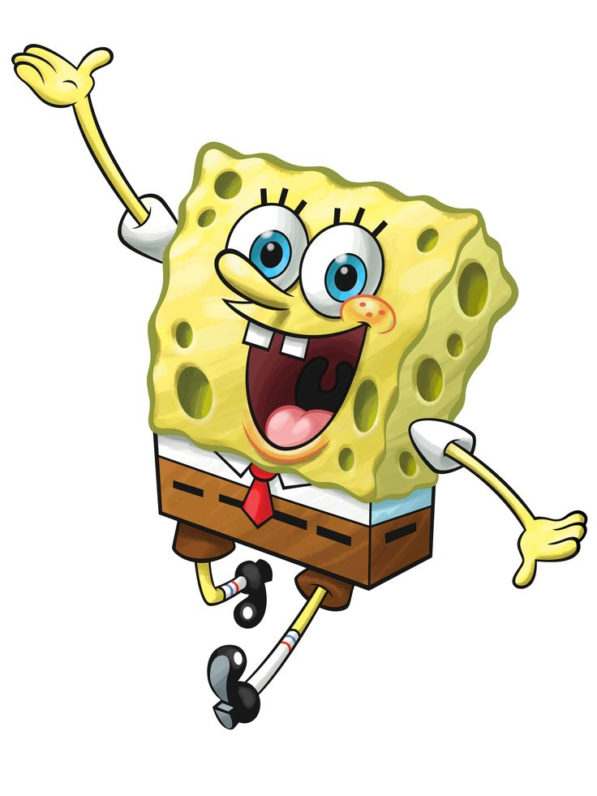
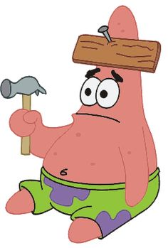
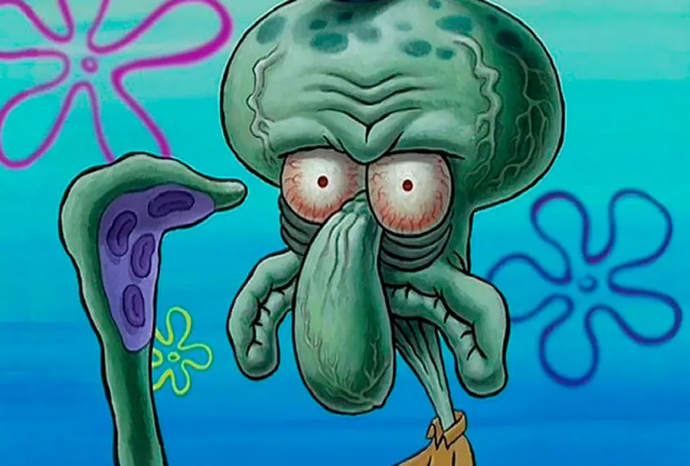
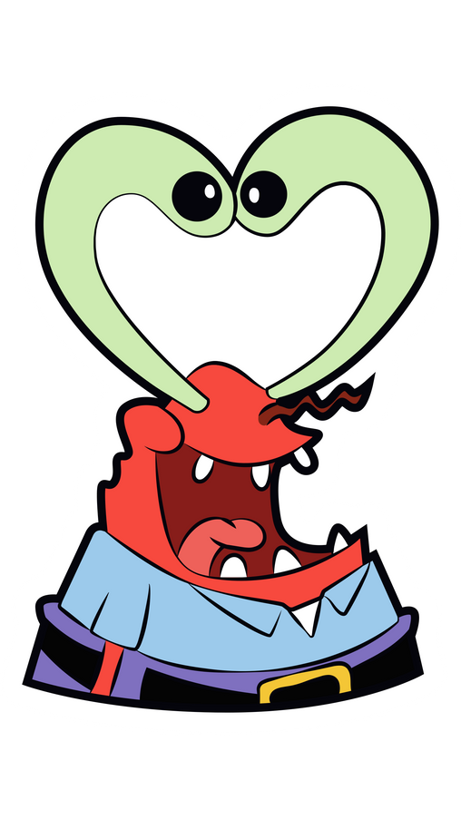
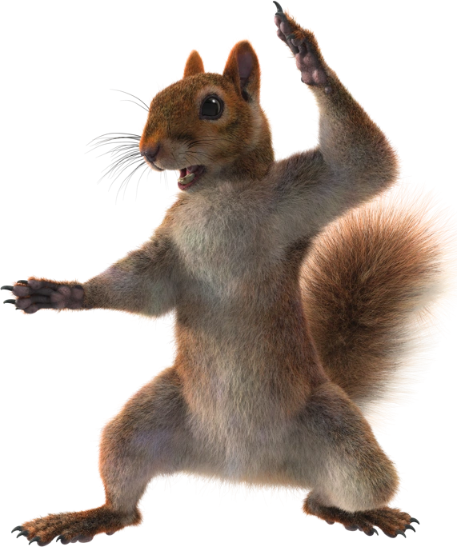
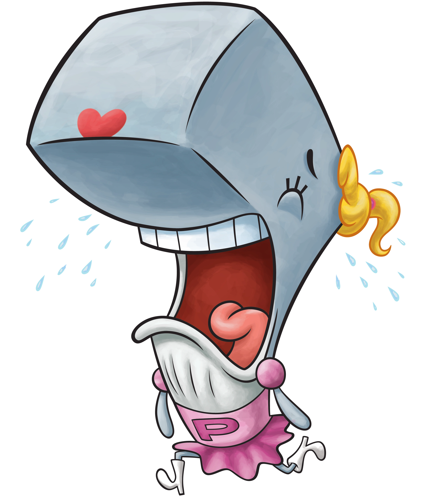
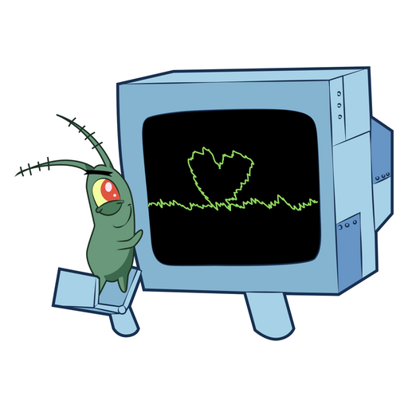
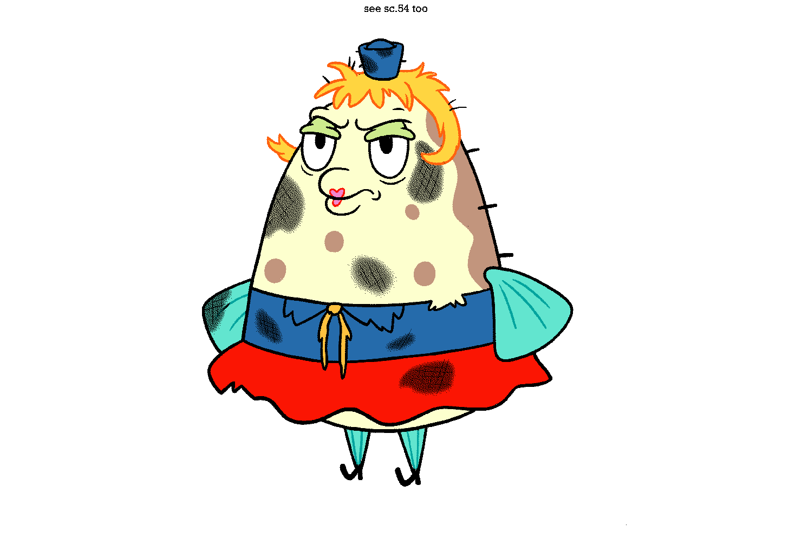
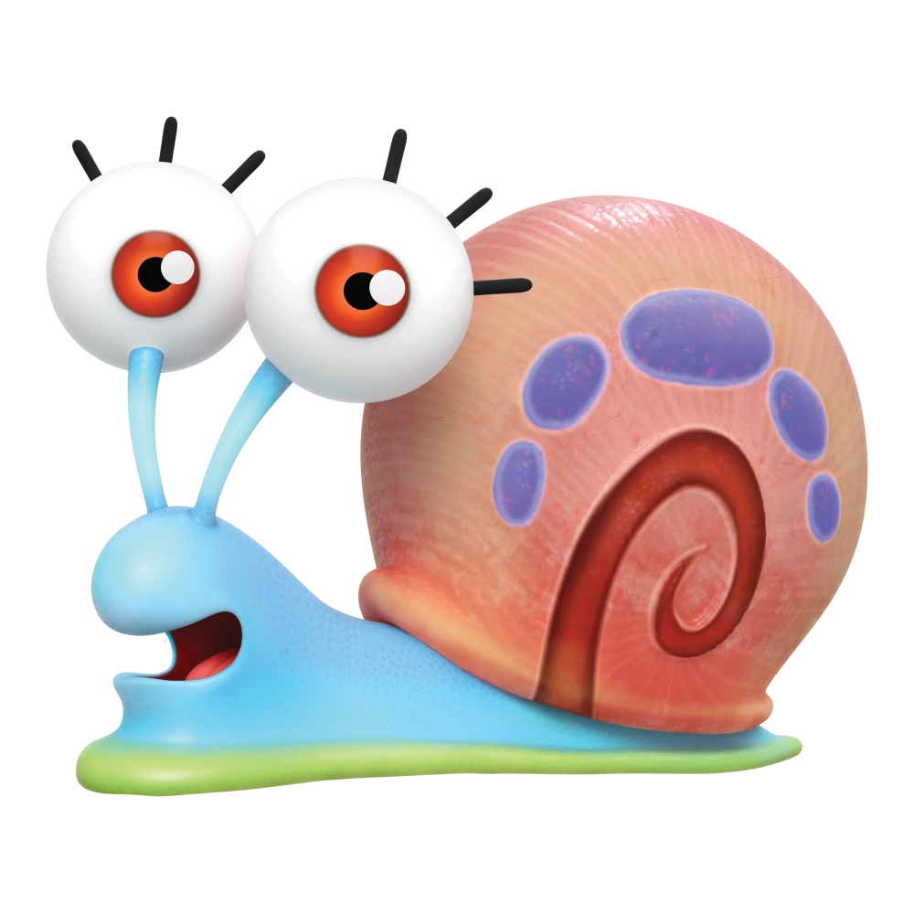

| Image |
character |
introduction |
|  |
SpongeBob SquarePants |
SpongeBob SquarePants (voiced by Tom Kenny, Antonio Raul Corbo as young SpongeBob in The SpongeBob Movie: Sponge on the Run) is a yellow anthropomorphic sea sponge who usually wears brown short pants, a white collared shirt, and a red tie. He lives in a pineapple house and is employed as a fry cook at a fast food restaurant called the Krusty Krab. He diligently attends Mrs. Puff's Boating School but has never passed; throughout the series, he tries his hardest on the exams but remains an unintentionally reckless boat driver. He is relentlessly optimistic and enthusiastic toward his job and his friends. SpongeBob's hobbies include catching jellyfish, blowing bubbles, playing with his best friend Patrick, and unintentionally irritating his neighbor Squidward. He first appears in "Help Wanted". |
|  |
Patrick Star |
Patrick Star (voiced by Bill Fagerbakke, Jack Gore as young Patrick in The SpongeBob Movie: Sponge on the Run) a pink starfish who lives under a rock and wears flowered swim trunks. His most prominent character trait is his extremely low intelligence. He is best friends with SpongeBob and often unknowingly encourages activities that get the two into trouble. While typically unemployed throughout the series, Patrick holds various short-term jobs as the storyline of each episode requires. He is generally slow and even-tempered but can sometimes get aggressive, much like real starfish, and occasionally performs feats of great strength. |
|  |
Squidward Tentacles |
Squidward Tentacles (voiced by Rodger Bumpass, Jason Maybaum as young Squidward in The SpongeBob Movie: Sponge on the Run) a turquoise octopus with a large nose who works as a cashier at the Krusty Krab. He is SpongeBob's next-door neighbor with a dry, sarcastic sense of humor. His house is between SpongeBob's and Patrick's houses. He believes himself to be a talented artist and musician, but nobody else recognizes his abilities. He plays the clarinet and often paints self-portraits in different styles, which he hangs up around his moai house. Squidward frequently voices his frustration with SpongeBob, but he genuinely cares for him deep down. This has been revealed in the form of sudden confessions when Squidward is in a dire situation. |
|  |
Mr. Krabs |
Eugene Krabs (voiced by Clancy Brown) is a red crab who lives in an anchor-shaped house with his daughter Pearl, who is a whale. He dislikes spending money but will go to great lengths to make Pearl happy. Krabs owns and operates the Krusty Krab restaurant where SpongeBob works. He is self-content, cunning, and obsessed with the value and essence of money. He tends to worry more about his riches than about the needs of his employees. Having served in the navy, he loves sailing, whales, sea shanties, and talking like a pirate. |
|  |
Sandy Cheeks |
Sandy Cheeks (voiced by Carolyn Lawrence, Presley Williams as young Sandy in The SpongeBob Movie: Sponge on the Run) is a squirrel from Texas who lives in an air-filled glass dome and wears a diving suit to breathe underwater. Whenever any aquatic creatures enter her home, they must wear helmets of water. Sandy works as a scientist, explorer, and inventor. She is a rodeo champion with a number of athletic interests, such as "sand-boarding" and karate. She speaks with a Southern drawl and uses typical Southern slang words and phrases. |
|  |
Pearl Krabs |
Pearl Krabs (voiced by Lori Alan) is a teenage sperm whale and Mr. Krabs' daughter. She wants to fit in with her fish peers, but finds this impossible to do because of the large size inherent to her species. She will inherit the Krusty Krab from her father when she grows older, but is still in high school and does not yet have a job at the family business. Pearl's favorite activities are working at the Bikini Bottom Mall, using her father's credit card to buy anything that is in style, and listening to pop music. |
|  |
Plankton and Karen |
Sheldon Plankton (voiced by Mr. Lawrence) and Karen Plankton (voiced by Jill Talley) are the owners of the Chum Bucket, an unsuccessful restaurant located across the street from the Krusty Krab. Their business is a commercial failure because they sell mostly inedible foods made from chum. Plankton is a small planktonic copepod and the self-proclaimed archenemy of Mr. Krabs. His ultimate goal is to steal Krabs' secret formula for Krabby Patties, run the Krusty Krab out of business, and take over the oceanic world, but he never permanently succeeds, usually due to either SpongeBob and/or Krabs' efforts, his own incompetence and immaturity, or his own small size (except, temporarily, in The SpongeBob SquarePants Movie). Plankton is a skilled inventor and possesses a Napoleon complex due to his short stature. Karen is Plankton's own invention, a waterproof supercomputer who is more competent that Plankton, being the brains behind most of his evil plans to steal Krabs' secret recipe. She is married to Plankton and usually takes residence in the Chum Bucket laboratory. Karen speaks with a pronounced Midwestern American accent. |
|  |
Mrs. Puff |
Mrs. Puff (voiced by Mary Jo Catlett) is a paranoid pufferfish who is SpongeBob's teacher at boating school, an underwater driver's education facility where students drive boats like cars. She wears a sailor suit and her school is a lighthouse. SpongeBob is Mrs. Puff's most dedicated student and knows the answer to every question on her written and oral exams, but always panics and crashes when he actually boards a vessel. She puffs up into a ball when she is scared or injured. As a running gag, she is frequently arrested by the police, usually due to her being responsible for SpongeBob when he causes destruction around Bikini Bottom during his boating test. |
|  |
Gary the Snail |
Gary the Snail (voiced by Tom Kenny) is SpongeBob's pet sea snail who lives with him in their pineapple home and vocalizes like a cat. Other snails and SpongeBob can understand and talk to him. Depicted as a level-headed character, Gary often serves as a voice of reason and a foil to SpongeBob and solves problems that his owner cannot. He has a pink shell that is impossibly spacious on the inside. |